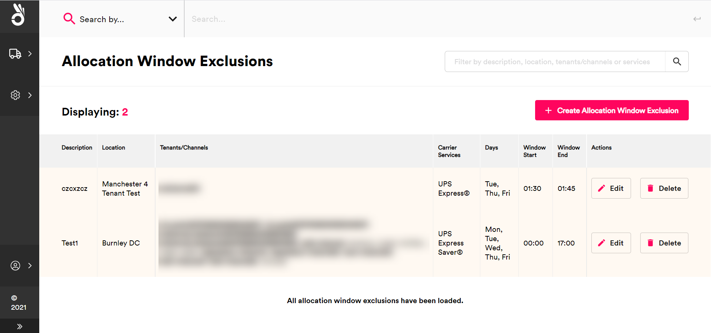
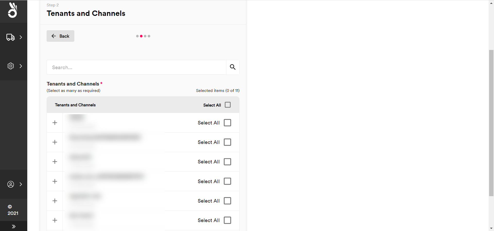
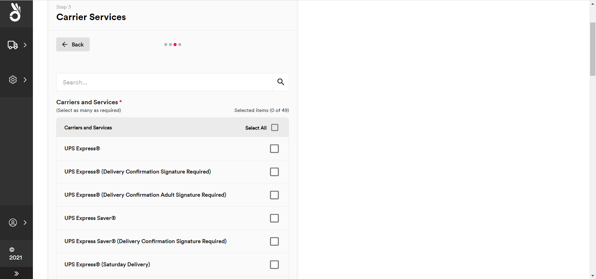
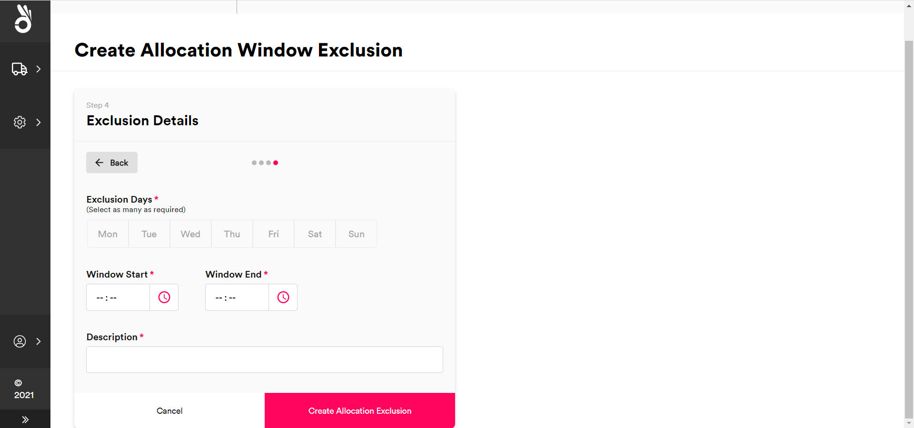
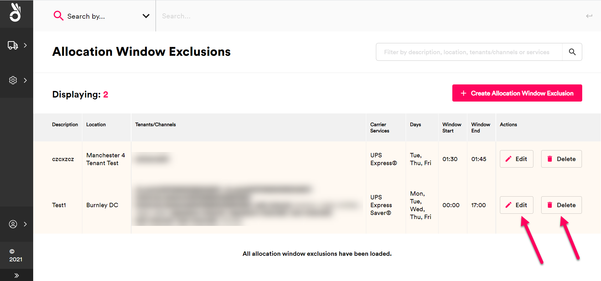
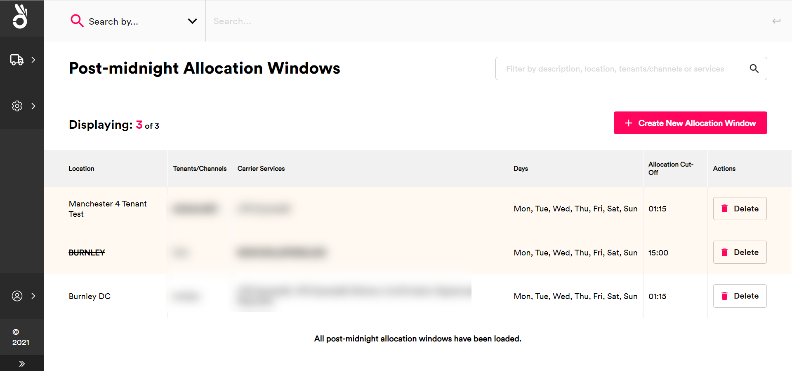
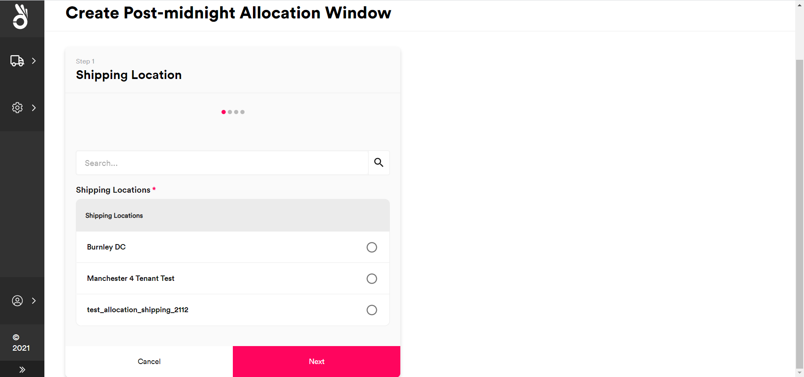
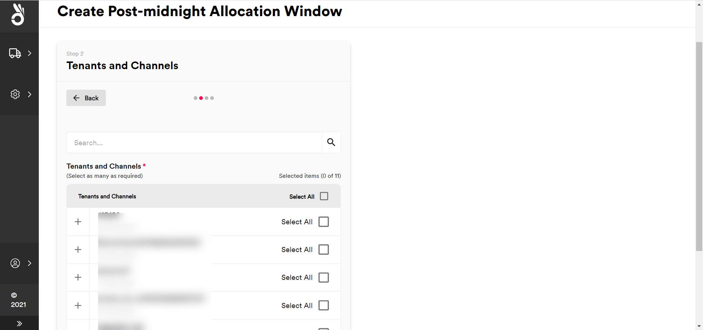
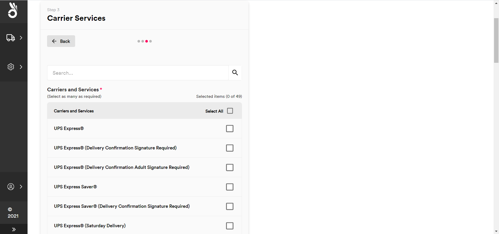
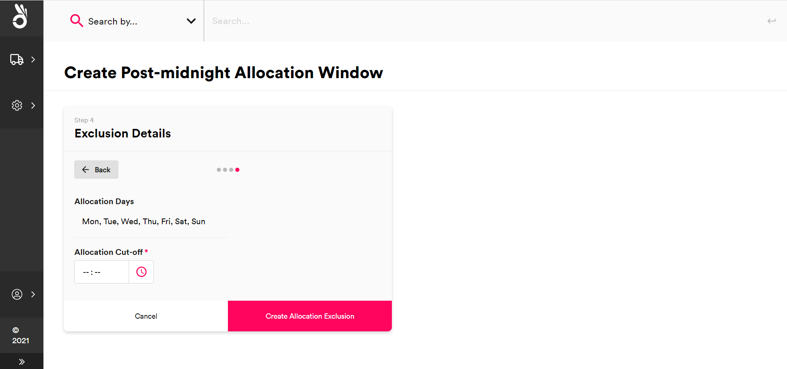

Managing Allocation Windows
In PRO, an allocation window is a recurring time period in which a carrier service is available for quotes. This page explains how to configure allocation windows for your carrier services, including specifying bespoke cut-off times for same-day delivery.
[!include[_development_statement](../pro/api/includes/_development_statement.md)]Allocation Window Overview
Allocation windows enable you to limit the time periods in which PRO can return a quote for a particular carrier service. This can help you to set up "real-time" shipping workflows (i.e. a workflow in which shipments are allocated to a carrier service as they are about to leave the warehouse).
In PRO, allocation windows are configured as exclusions (that is, you configure days and times during which PRO cannot return quotes for a particular carrier service, with the system able to return quotes for that service at all other times). Allocation window exclusions are comprised of the following information:
- One or more associated carrier services.
- One or more associated shipping locations.
- For organisations using multi-tenancy, a selected scope (i.e. a list of your organisation's tenants and channels to which the window exclusion applies).
- Start and end times for the window exclusion.
Once the window is configured, PRO can only return the selected carrier services in quotes requested from the selected shipping locations by the selected tenants and channels outside the times specified. You can configured multiple window exclusions for each carrier service if required.
Note
Allocation windows define whether or not a particular carrier service is available for consideration when generating quotes. They do not define the availability of the carrier service to take the shipment in question. Even if a service is "available" outside an allocation window exclusion, that is not a guarantee that the service will be able to actually quote.
Allocation Window Worked Example
The following example shows window exclusions set up for three carrier services:
| Carrier Service | Scope(s) | Window Start | Window End |
|---|---|---|---|
HMSUK |
Location: SLOC001, Tenant: *, Channel: * |
00:00:00 (UTC) |
03:29:59 (UTC) |
HMSBFPO |
Location: *, Tenant: TEN_01, Channel: * |
00:00:00 (UTC) |
03:29:59 (UTC) |
DPD_ND |
Location: *, Tenant: TEN_01, Channel: * |
00:00:00 (UTC) |
13:59:59 (UTC) |
DPD_ND |
Location: *, Tenant: TEN_01, Channel: * |
19:00:01 (UTC) |
23:59:59 (UTC) |
DPD_ND |
Location: *, Tenant: *, Channel: * |
03:30:01 (UTC) |
23:59:59 (UTC) |
With this configuration:
- Service
HMSUKcan only be returned in quotes from shipping locationSLOC001between 03:30:00 and 23:59:59. - Service
HMSBFPOcan only be returned in quotes requested by tenantTEN_01between 03:30:00 and 23:59:59. - Service
DPD_NDcan only be returned in quotes requested by tenantTEN_01between 14:00:00 and 19:00:00. - Service
DPD_NDcan only be returned in quotes requested by tenants other thanTEN_01between 00:00:00 and 03:30:00.
Creating Allocation Window Exclusions
To create an allocation window exclusion:
From the side menu, select Settings > Allocation Windows > Allocation Window Exclusions to display the Allocation Window Exclusions page. 
Click the Create Allocation Window Exclusion button to display the Shipping Location tile.
Select the shipping locations to which the allocation window exclusion should apply and then click Next to display the Tenants and Channels tile. 
Select the scope for the allocation window exclusion:
- To select all available tenants and channels, click the Select All check box at the top of the list.
- To select a particular tenant and all of its channels, click that tenant's Select All check box.
- To select a particular channel within a tenant, click the tenant's + icon and then select the channel from the list.
Click Next to display the Carrier Services tile. 
Select the carrier services to which the allocation window exception should apply and then click Next to display the Exclusion Details tab. 
Configure the days and times that the exclusion applies to.
- Select the Exclusion Days of the week to which the exclusion applies.
- Enter the start time of the exclusion into the Window Start field, and the end time into the Window End field.
- Enter a brief Description of the exclusion window.
Note
Allocation exclusion windows repeat weekly based on the days and times selected.
Click Create Allocation Exclusion to finish creating the window. The system no longer returns the selected services in quotes from the selected tenants, channels, and/or locations within the specified timeframe.
Note
You can configure multiple windows for services, tenants/channels, and locations if required. For example, if you wanted to exclude a particular service between 09:00:00 and 10:00:00 in the morning, and then again between 21:00:00 and 22:00:00 at night, you could set up two separate windows with the same service, tenant/channel, and location details.
Editing Existing Allocation Window Exclusions
To edit an existing allocation window exclusion, select Settings > Allocation Windows > Allocation Window Exclusions to display the Allocation Window Exclusions page and then click Edit on the window that you want to edit. The process of editing an existing window exclusion is the same as that used to set up a new window exclusion.
To delete an existing allocation window exclusion, select Settings > Allocation Windows > Allocation Window Exclusions to display the Allocation Window Exclusions page and then click Delete on the window that you want to delete. Select Delect Exclusion on the confirmation dialog to confirm the deletion.

Post-Midnight Allocation Overview
Post-midnight allocation enables a next-day service to operate as a same-day service for a specified period of time.
Ordinarily, a next-day service would have an allocation cutoff of 23:59:59 on any given day. Once that time has passed then a new day has started, and any shipments allocated would be scheduled for the day after.
For example, Shipment 1 allocating to next-day service Example1 at 23:59:00 on a Monday would be delivered on the Tuesday, while Shipment 2 allocating to the same service five minutes later (i.e. 00:04:00 on the Tuesday) would be scheduled for delivery on the Wednesday.
Post-midnight allocation enables you to push this cut-off time back. Continuing from the previous example, if you were to specify a post-midnight allocation time of 01:30 for the Example1 carrier service, then both shipments would be delivered on the Tuesday, even though Shipment 2 was technically not created until that same day.
From a configuration standpoint, as a next day service Example1 would ordinarily have a transit time of one day. By creating a post-midnight allocation window, you effectively change the transit time of the service to zero days when allocating between 00:00 and 01:30 in the morning.
Configuring Post-Midnight Allocation Windows
To create a post-midnight allocation window:
From the side menu, select Settings > Allocation Windows > Post-Midnight Allocations to display the Post-Midnight Allocation Windows page. 
Click Create New Allocation Window to display the Shipping Location tile. 
Select the shipping locations to which the post-midnight allocation window should apply and then click Next to display the Tenants and Channels tile. 
Select the scope for the post-midnight allocation window:
- To select all available tenants and channels, click the Select All check box at the top of the list.
- To select a particular tenant and all of its channels, click that tenant's Select All check box.
- To select a particular channel within a tenant, click the tenant's + icon and then select the channel from the list.
Click Next to display the Carrier Services tile. 
Select the carrier services to which the post-midnight allocation window should apply and then click Next to display the Exclusion Details tab. 
Select the Allocation Cut-Off time that you want to apply to the selected combination of services, tenants/channels, and locations, and then click Create Allocation Exclusion to create the allocation window.
Deleting Existing Post-Midnight Allocation Windows
To delete an existing post-midnight allocation window, select Settings > Allocation Windows > Post-Midnight Allocation Windows to display the Post-Midnight Allocation Windows page and click Delete on the window that you want to delete. Select Delete Window on the confirmation dialog to confirm the deletion.